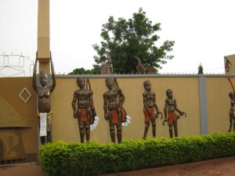

HAUTS-BASSINS


Situé au cœur de la ville de Bobo-Dioulasso, le musée communal Sogossira Sanon a ouvert ses portes en mars 1990. Le vendredi 03 novembre 2017, nous y avons fait un tour. Première constatation, il est souvent vide de visiteurs. Pourtant il a pour mission principale la conservation et la valorisation de l’histoire des communautés de l’Ouest, du Burkina Faso de façon générale.
Cela fait déjà vingt sept (27) ans que le musée communal Sogossira Sanou (ex musée provincial du Houet) est au service du développement de la commune de Bobo-Dioulasso. Situé au cœur de la ville, ce musée a vu le jour grâce aux efforts conjugués de trois communautés à savoir la communauté bobo, peul et sénoufo. En effet, ces communautés ont décidé ensemble de mettre en place ce musée, cela afin de permettre aux générations futures de connaitre au moins leurs richesses, « ce que nous avons comme patrimoine culturel ». Ainsi, ces trois communautés de la ville de Bobo-Dioulasso ont décidé de transformer le bâtiment, qui est colonial et qui retrace aussi l’histoire avec ses colons français, en musée. Dans cette démarche, elles ont bénéficié de l’appui du ministère en charge de la culture pour que leur idée devienne une réalité lors de la 5e édition de la semaine nationale de la culture (SNC) en mars 1990.
Connu sous le nom de musée provincial du Houet ou musée national, ce musée va changer de nom le 17 mai 2011 et deviendra musée communal Sogossira Sanon. « C’est le 17 mai 2011, que le musée va prendre le nom de musée communal Sogossira Sanon et cela suite au transfert de compétence. Et le volet culture fait partie des domaines transférés à la commune. C’est ainsi que la commune aussi va trouver un nouveau nom pour ce musée. Sogossira Sanon était un chef de canton qui a beaucoup fait pour la culture et qui a aimé la culture. C’est son nom qui a été donné à cette structure qui conserve la mémoire de ces peuples de l’Ouest », a laissé entendre Salgo Ilassa, technicien supérieur de musée et président de l’association des amis du musée de Bobo.La mission principale du musée est de conserver tout ce qui peut témoigner de l’histoire des communautés de l’Ouest et du Burkina Faso de façon générale. Selon Salgo Ilassa, le musée communal est un musée ethnographique qui permet à toutes les ethnies, toutes les communautés de la ville de Sya de s’y retrouver.
Cette galerie conserve les objets de toute nature capables de témoigner de l’existence ou des comportements de l’histoire de tous ces peuples de l’Ouest du Burkina Faso. On peut y avoir des masques, des statuettes, des parures vestimentaires, des instruments de musique, etc. Parmi les collections du musée Sogossira Sanou, nous avons le Yéléguangan qui est la canne de l’homme complet. Elle est transmise d’une génération à une autre, après de rudes épreuves corporelles (fouet) et physiques (travaux champêtres, sport, etc.)
« Nous avons une première salle qui est consacrée aux arts contemporains et aux arts plastiques. Nous avons aussi des œuvres dans des disciplines tel que la sculpture, la peinture et le batik. Et ce sont des œuvres qui sont primées lors des éditions de la semaine nationale de la culture (SNC) dont le musée communal a la responsabilité de conserver et de diffuser les message véhiculer par ces œuvres. On peut aussi voir des habitats traditionnels qui sont des patrimoines meubles et qui permettent d’identifier nos communautés. Ces maisons sont là en mémoire des communautés qui ont eu l’idée de créer le musée », nous a confié monsieur Salgo.
Assez récent (1980) le Musée est la mémoire de la région Ouest du Burkina.
On y trouve de nombreux outils traditionnels, des oeuvres, bijoux de bronze, etc.
Deux types d’habitats y ont été reconstitués grandeur nature : une maison Bobo et une case Peul.
Vous pourrez même y admirer des artisans du bronze et du bois en plein travail.
Bobo-Dioulasso demeure ainsi la capitale culturelle du Burkina Faso, la capitale artistique.